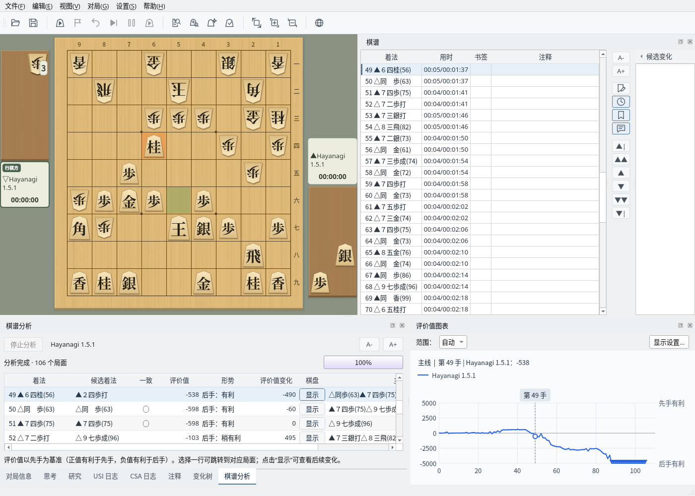
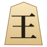
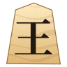
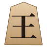
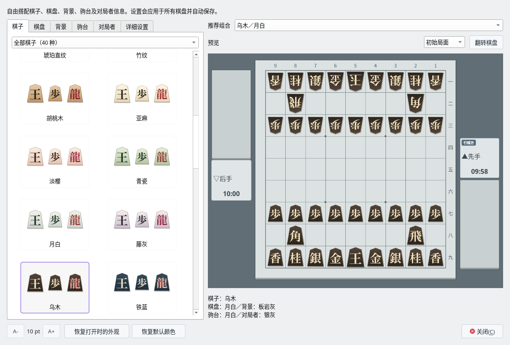

研究与分析
候选着法化作箭头，
形势变化一目了然
注册 USI 引擎后，即可在研究模式中分析任意局面，或一次性分析整盘棋谱。借助评价值图表和分析结果列表，可以迅速找到形势发生转折的那一手。
- 候选着法以带编号的箭头显示，打入的着法从驹台引出
- 棋谱分析逐手列出评价值、是否与最佳着法一致以及评价值变化
- 对局中也能用箭头查看引擎的最佳着法；引擎对引擎时可同时显示双方的思考
- 通过变化树、书签和注释整理研究内容


从研究、外观和诘棋三个场景，介绍 ShogiBoardQ 的使用体验。
研究与分析
注册 USI 引擎后，即可在研究模式中分析任意局面，或一次性分析整盘棋谱。借助评价值图表和分析结果列表，可以迅速找到形势发生转折的那一手。

外观
通过“视图”→“对局外观…”，可以从样本中分别选择棋子、棋盘、背景、驹台和对局者信息，并在预览中确认整体效果。




诘棋
发布包收录 3、5、7、9、11、13 手诘各 1,000 道。从题目列表中选题，由内置引擎 Hayanagi 担任守方，在棋盘上将死对方的玉。
使用指南按用途介绍了全部功能（目前提供英文版和日文版）。
对局、研究和分析需要注册支持 USI 协议的将棋引擎。Linux 版发布包中附带了将棋引擎 Hayanagi。在此向各位将棋引擎开发者致以谢意。
可从 GitHub 发布页面获取最新版本，免费使用。
64 位 Windows（x64）
ShogiBoardQ.exe搭载 Apple 芯片的 Mac
ShogiBoardQ.app 拖到“应用程序”文件夹x86_64（AppImage）
ShogiBoardQ-linux-x86_64.AppImage 添加执行权限后运行各安装包均附带诘棋题集（6,000 道），Linux 版还附带将棋引擎 Hayanagi。系统要求和更新内容请参阅发布说明（日文）。
获取包含子模块的仓库后，即可使用 Qt 6 和 CMake 构建。各操作系统的步骤请参阅构建指南（英文）。
ShogiBoardQ 是依据 GNU 通用公共许可证第 3 版（GPL-3.0）发布的自由软件。
许可证全文请参阅 LICENSE 文件。